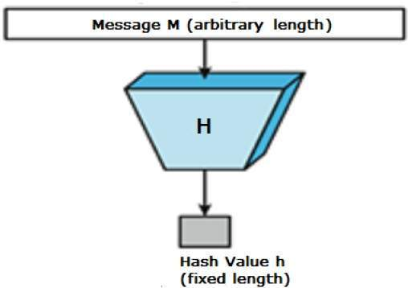

parent 233
author Git Fundamentals <gitfund@git.com> 1409885160 -0600
committer Git Fundamentals <gitfund@git.com> 1409885160 -0600
# patches for files that changedThe Power of Trust
The Power of Trust
Knowing what is True across time and space
Distributed transactions are complex
“Minor” Details
After all, you need to worry about things like:
network latency
network reliability
responsiveness to users
data corruption on multiple systems and across the wire
state management across multiple systems (that may not be able to communicate)
etc. etc.
Different Needs Different
Obligatory Caveat: Every situation needs to be looked at in its own context
Back to the Fundamentals
There’s only a small handful of ways that have proven to be most effective
Focus On Simplicity
What’s In A Name?
If we have something, we want to be able to identify it…
Common (computer data) Identifiers
memory address
file name
class name
revision numbers
etc.
Can You Step Into the Same River Twice?
None of those tell you the state of the thing…
Implied Information
There’s an implied extra piece needed: “time” (and generally also “place”)
Identify Something By Its Content
Same things should be identified as same
Different things should be identified as different
Hash
Hash function — any function that can be used to map data of arbitrary size to data of fixed size

Changes
What that means is that any change at all will change the value of the hash
DDD
We have identified a frozen Entity state
Change management to an Entity is done via things like the Command pattern or event processing
To see an excellent example of this basic idea enforced by a language, see Clojure’s Approach to Identity and State
Example
Let’s take an example of distributed transactions virtually all of you are familiar with: Git
A much, much deeper look can be seen at my Git Fundamentals talk
Source Code Transactions
A “transaction” in a source revision control system is a commit
Distributing Source Code Transactions
Most RCSs like SVN/Perforce/etc. have a centralized transaction broker
Centralized RCS Commit Structure
Pseudo for "Revision 234"
Shape of a Git Commit
$ echo "More cow-bell\!" > file1.txt
$ git commit -am "Added more cow-bell."
[master 7581387] Added more cow-bell.
1 file changed, 1 insertion(+), 1 deletion(-)
$ git cat-file -p 7581387
tree 366612747e1b0730cdbb680bb48ba6132b321848
parent 3b1b4ff08b048aceeb4ccb38739101ec94b8fd01
author Git Fundamentals <gitfund@git.com> 1409885160 -0600
committer Git Fundamentals <gitfund@git.com> 1409885160 -0600
$ git cat-file -p 3666127
100644 blob faff7b9f491fea306a748f2e17e536918fb6a601 file1.txt
100644 blob 63ffb2bff74e9161a82b82999718f441df6a68f1 file2.txt
040000 tree cb63181eaa27bf4caedf9d9d212840206a77c11d morefilesWhy Did Git Use Hashes?
If you’re not a particularly a hard-core data-structures nerd, it probably struck you as a little odd that hashes were being taken used to refer to EVERYTHING instead of more "natural" things like filenames, timestamps, incrementing revision numbers, etc.
Hash Advantages
Using hashes (especially a "cryptographically secure" hash) gives us some wonderful properties:
Tied to Content
The identifier (the hash) is intimately tied to the CONTENT of what it’s referencing
For example, compare it to a file name; a hash is consistent across file systems, renames, emailing/FTPing it around, etc
The same content — be it one bit or 5 million petabytes — always hashes to the same value (using the same hashing algorithm) regardless of what OS, location in time/space, etc
Change Detection
If ANYTHING changes, the hash changes
This guarantees change detection is trivial (the corner-stone of change/state management), since the very way you reference something reflects if a change happened
Location Independence
The same content ALWAYS gives the same hash, regardless of when or where it’s computed
Therefore there’s no need to make sure to “check in” with a central broker to make sure that everyone is calling the same thing the same thing, and different things differently
Hash Trees

Outside of Memory-Space
Notice that this gives solves everything we talked about at the beginning
Those “Minor” Details
network latency
network reliability
responsiveness to users
data corruption on multiple systems and across the wire
state management across multiple systems (that may not be able to communicate)
etc. etc.
Network Latency/Reliability
If the network network is unreliable, it has virtually no impact of anything. (Notice the relative lack of git commands that touch the network at all)
It certainly has no impact on the “correctness” of a commit
Responsiveness
Because the network isn’t needed to ensure “correctness”*, dealing with transactions has no performance implications
for some value of the term “correct”
Data Corruption
The ID acts as its own checksum, so data corruption (accidental or otherwise) is instantly detectable
Doing a full audit is trivial: Just re-generate the hashes
State Management
You know with absolute certainty that the underlying data in the ledger (i.e., transaction history) hasn’t mutated
“Eventually Consistent”
That makes it even possible, since otherwise there would be no way to ensure correctness
Reconciling Changes
Different systems have different ways of tackling this problem based on their domain
What’s With All These Accounting Terms?
“Reconcile”?
“Ledger”?
“Audit”?
“Broker”?
“Transaction”?
A Long History
We (civilization) have had processes in place to track distributed transactions for a very long time
Centralized Transaction Brokers
The primary reason why the older RCSs have centralized transaction brokers is that you couldn’t “trust” that everyone was keeping accurate records
(It’s also a bit more convenient in some ways)
What If All Transactions Are Open and Verified?
That’s what Git does
What about other processes where trust is needed?
Like, say, transferring money…
Sample Money Transfer
Transaction 2387df82cba96234
parent 31340de02bca878
from bc2234234234624
to 24acbd8236348db
amount 67.93Property Transfer
Transaction 2387df82cba96234
parent 31340de02bca878
from bc2234234234624
to 24acbd8236348db2
latlong 38.8977, 77.0365Some Implications
Now what is the value provided by centralized institutions that exist to provide “trusted” information? (e.g., banks, land titles, patents, music licensing, marriage licensing, election boards, …)
You no longer need to trust the honor of people at those institutions, but rather public ledgers trusted by Math
Agreements
Any “agreement” is a contract, though generally informal
What if you bring the cost of formalizing to near-zero?